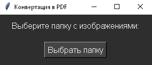

Image to PDF Conversion Script — convert_to_pdf.py
This script was created to simplify my own workflow. I would be happy if it makes your life a bit easier as well.
In just a couple of seconds, you can convert all images in a selected folder into a single PDF.
The images are resized to match each other, sorted alphabetically, and the resulting PDF is named after the first image.
The script supports the following image formats: png, jpg, jpeg, bmp, gif, tiff.

For convenience, I created a small interface to select the desired folder and also added a bat file to the archive
for quick script execution. The download button for the script archive is located above.
At the end of this article, the full source code is provided for those who are curious.
Installation and Usage Instructions
-
Check whether Python is installed on your computer:
- Open the command prompt (Win+R → type
cmd → Enter).
- Enter the command:
python --version
-
If the output shows a Python version, proceed to the next step. If not:
- Install Python from the official website: python.org.
- During installation, make sure to check “Add Python to PATH”.
-
Install the Pillow library (Windows):
pip install pillow
- Extract the archive.
-
Run the script:
- Double-click
run_convert_to_pdf.bat (Windows).
- On other operating systems, run
run_convert_to_pdf.py via the command line.
- Select the folder containing your images and click OK.
- Wait for the notification and check the new PDF file in the image folder.
Source Code
import os
from PIL import Image
import re
import tkinter as tk
from tkinter import filedialog, messagebox
def numerical_sort(value):
"""Sorting function that takes numeric parts of filenames into account"""
numbers = re.findall(r'\d+', value)
return list(map(int, numbers)) if numbers else [0]
def images_to_pdf(folder_path):
image_files = [f for f in os.listdir(folder_path)
if f.lower().endswith(('png','jpg','jpeg','bmp','gif','tiff'))]
if not image_files:
messagebox.showerror("Error", "No images found in the selected folder.")
return
image_files.sort(key=numerical_sort)
output_pdf = os.path.join(folder_path, os.path.splitext(image_files[0])[0] + ".pdf")
image_list = []
with Image.open(os.path.join(folder_path, image_files[0])) as first_image:
base_width, base_height = first_image.size
first_image_rgb = first_image.convert('RGB')
image_list.append(first_image_rgb)
for image_file in image_files[1:]:
image_path = os.path.join(folder_path, image_file)
with Image.open(image_path) as img:
img_resized = img.resize((base_width, base_height))
img_rgb = img_resized.convert('RGB')
image_list.append(img_rgb)
first_image.save(output_pdf, save_all=True, append_images=image_list[1:])
messagebox.showinfo("Success", f"PDF successfully created: {output_pdf}")
def browse_folder():
folder_path = filedialog.askdirectory()
if folder_path:
images_to_pdf(folder_path)
root = tk.Tk()
root.title("Convert to PDF")
root.geometry("300x100")
dark_bg = "#2e2e2e"
dark_fg = "#ffffff"
button_bg = "#444444"
button_fg = "#ffffff"
root.configure(bg=dark_bg)
label = tk.Label(root, text="Select a folder with images:", bg=dark_bg, fg=dark_fg)
label.pack(pady=10)
button_browse = tk.Button(root, text="Choose folder", bg=button_bg, fg=button_fg, command=browse_folder)
button_browse.pack(pady=10)
for widget in (label, button_browse):
widget.config(font=("Arial", 12))
root.mainloop()